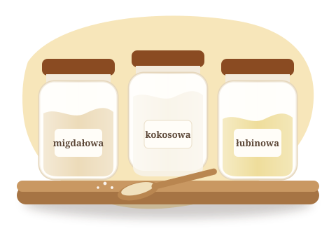
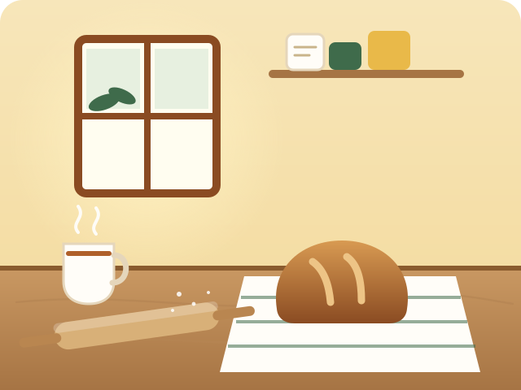

Na start
Pieczywo i bułki
Chleb na kanapki i bułki na niedzielne śniadanie. Bez gumowej konsystencji.
Zobacz ebookChleb, bułki i serniki keto, które wychodzą za pierwszym razem. Sprawdzone przepisy do upieczenia w domu — dla Ciebie i całej rodziny.
5 przepisów na keto chleb i bułki, które wychodzą za pierwszym razem — prosto na Twoją skrzynkę.

Każdy przepis testujemy tak długo, aż wychodzi za pierwszym razem — także Tobie.
Przy każdym przepisie policzone węglowodany, białko i tłuszcz. Nie musisz liczyć sam.
Wiesz, ile to zajmie i czy dasz radę, zanim wyjmiesz pierwszą miskę.
Kupujesz bez ryzyka. Jeśli ebook Ci nie pasuje, oddajemy pieniądze.
Przepisów na keto chleb jest w sieci mnóstwo i wszystkie są za darmo. Problem w tym, że mąki keto zachowują się zupełnie inaczej niż pszenna — jeden gram za dużo albo za mało i cały bochenek jest do wyrzucenia.
My nie sprzedajemy przepisu. Dajemy pewność, że wyjdzie. Każdy wypiek pieczemy wielokrotnie, liczymy makra i opisujemy krok po kroku, co robić — także wtedy, gdy coś pójdzie nie tak.
Chcę darmowe przepisyZaczynamy od pieczywa — bo brakuje go najbardziej. Potem przyjdą ciasta, święta i kompendium wiedzy o mąkach.
Chleb na kanapki i bułki na niedzielne śniadanie. Bez gumowej konsystencji.
Zobacz ebookWypieki, które łączą rodzinę przy jednym stole — na co dzień i od święta.
Zobacz w sklepieBożonarodzeniowe i wielkanocne wypieki, żeby przy świątecznym stole nikogo nie zabrakło.
Zobacz w sklepie
Migdałowa, kokosowa, łubinowa, babka płesznik — proporcje i zamienniki.
Zobacz w sklepieJesteś na diecie keto lub low-carb — z wyboru albo dlatego, że tak zaleca lekarz — i wiesz, jak bardzo brakuje zwykłego pieczywa? Pieczemy z myślą o osobach po czterdziestce, także tych z insulinoopornością lub cukrzycą typu 2, i o całej rodzinie, która siada do jednego stołu.
Nasze przepisy nie zastępują porady lekarza ani dietetyka.

Keto pieczywo
12 przepisów na chleb i bułki, które wychodzą za pierwszym razem
Mały ebook o jednym konkretnym problemie: jak upiec keto chleb, który nie jest gumowy.
Każdy przepis ze zdjęciami krok po kroku, makrami, czasem i poziomem trudności. Pierwsze wpisy już w przygotowaniu.
Podstawowy bochenek na każdy dzień — z zapasem sprawdzonych wskazówek.
Zapach świeżego pieczywa bez węglowodanów pszennych.
Klasyczny, puszysty, bez cukru.
„Tutaj wpisz prawdziwą opinię.”
Nie. Przy każdym przepisie zaznaczamy poziom trudności i czas, a kroki opisujemy tak, jakbyśmy stali obok Ciebie w kuchni. Jeśli pieczesz keto po raz pierwszy, zacznij od przepisów oznaczonych jako łatwe.
W większości supermarketów (dział zdrowej żywności), w sklepach ze zdrową żywnością i online. Podpowiadamy, na co zwrócić uwagę przy zakupie i czym można ją zastąpić.
Tak. Masz 7 dni gwarancji zwrotu pieniędzy — wystarczy napisać do nas w tym czasie od zakupu.
Zapisz się na newsletter i odbierz 5 przepisów na chleb i bułki. Nowe przepisy i pomysły — raz na jakiś czas, bez spamu.